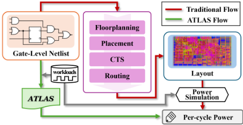
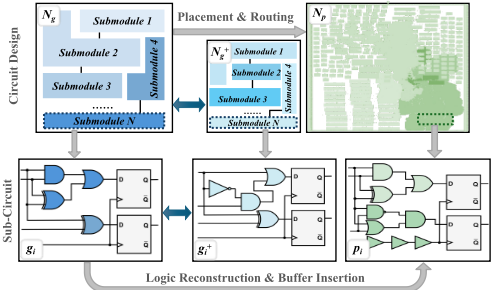
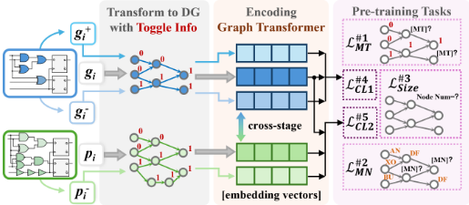
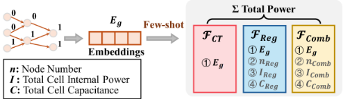
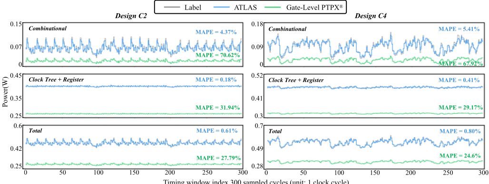
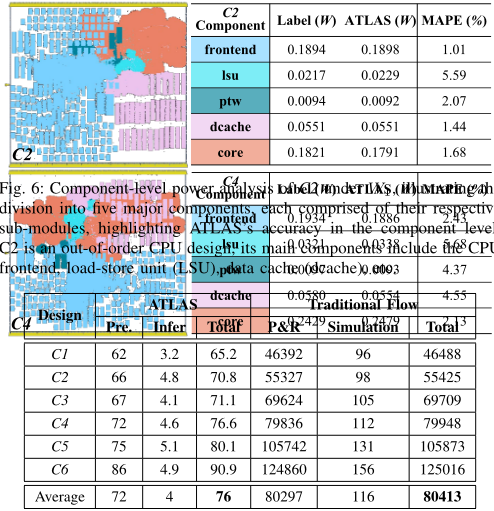

ATLAS：面向细粒度基于时间（time-based）版图功耗分析的自监督跨阶段网表功耗模型
芯片从门级网表到版图阶段，传统精确功耗分析需先完成整个后端布局布线，再用目标 workload 基于商业工具做逐周期功耗仿真，大设计可能耗时数天到数周；已有 ML 功耗模型要么只支持设计特定的 time-based 建模、要么只能预测平均功耗，且多以门级功耗为标签，无法捕捉版图阶段布线电容、时序优化与时钟树的影响。ATLAS 提出首个同时支持 time-based 功耗预测与跨设计泛化建模的网表功耗模型：将门级网表切分为不重叠子模块并转为图，用五个自监督任务（掩码 toggle 传播、掩码节点类型、子模块规模、功能等价网表对比学习、跨阶段网表-版图对齐对比学习）预训练图 Transformer 编码器，再对时钟树、组合逻辑、寄存器三个功耗组分别微调轻量 XGBoost 模型。在 30 万-60 万单元的 6 个设计（TSMC 40nm）上，总功耗 MAPE < 1%，三组 MAPE 分别为 0.58%/0.45%/5.12%，比传统 layout+PTPX 流程快 1000 倍以上。该方法可在版图前对功耗敏感的 LPDDR/HBM 等 IP 做早期逐周期功耗与峰值功耗预估，直接对应 2.3 域的 ML 辅助功耗预测能力。
传统精确的逐周期版图功耗分析需要先完成整个布局布线流程，再用目标 workload（.fsdb/.vcd）基于商业 EDA 工具做 time-based 功耗仿真，大设计或长 workload 可能耗时数天到数周，严重拖慢功耗优化迭代；已有 ML 功耗模型要么只支持设计特定的 time-based 建模、要么只能评估平均功耗，且多数直接以门级网表阶段功耗为标签，未验证对最终版图功耗（受金属线电容、buffer 插入/网表重构等时序优化、时钟树影响）的捕捉能力。
ATLAS 从综合后门级网表直接预测版图后逐周期功耗，分三步：(1) 网表预处理：将设计切分为不重叠子模块（区别于逻辑锥划分的重叠问题），转为有向图并标注节点类型（含 CK 类时钟单元）、逐周期 toggle、cell internal power 与电容等特征；(2) 自监督预训练：基于高效图 Transformer SGFormer 的编码器，用五个任务联合训练——掩码 toggle 传播学习、掩码节点类型学习、子模块规模学习、基于功能等价变换的网表对比学习（InfoNCE）、跨阶段网表-版图对齐对比学习，使编码器学到版图变换（buffer 插入、重构、时钟树综合）的影响；(3) 微调：对时钟树、组合逻辑、寄存器三个功耗组，分别以编码器嵌入加少量 netlist 特征微调轻量 XGBoost 模型，输出逐周期功耗；SRAM 功耗组因版图不变，用基于端口 toggle 与 .lib 查表能量的简单 ML 模型单独预测。
总功耗平均 MAPE < 1%；时钟树、寄存器、组合逻辑三组 MAPE 分别为 0.58%、0.45%、5.12%，且不使用任何版图信息
基线对比：门级 Gate-Level PTPX 在 time-based 版图功耗上误差 > 25%，组合逻辑组 MAPE 为 69%，时钟树组 MAPE 为 100%（门级网表无时钟树）；ATLAS 组合逻辑组平均 MAPE 约 5%
相比完整传统流程（Innovus 版图 + PTPX 逐周期仿真），ATLAS 估计 300 周期 workload 的运行时间快 1000 倍以上
实验覆盖 6 个设计（C1-C6，门级约 30 万-60 万单元，TSMC 40nm），4 个设计训练、2 个设计测试且完全不重叠；组件级功耗误差大多 < 5%
预训练 60 epoch 约 21 小时（NVIDIA A6000），微调用 XGBoost（500 estimators、深度 5）仅需数秒；被排除在主要结果外的 SRAM 功耗组用简单 ML 模型达到 0.5% 误差
据论文所述是首个同时支持 time-based（逐周期）功耗预测与跨设计泛化建模的工作。与已有工作的区别：以版图后 PTPX 逐周期功耗为标签（而非门级功耗），捕捉布线电容、时序优化与时钟树对功耗的影响；提出面向电路功耗定制的预训练+微调范式，五个自监督任务中包含跨阶段网表-版图对齐对比学习；采用不重叠子模块划分替代逻辑锥划分，避免各锥功率求和远大于总功耗的重复计数问题；面向含时钟树的真实时序电路而非仅组合电路。
相关度级别：high
命中能力域：2.3 时序与物理实现 | 2.7 EDA/验证自动化与 AI 辅助
理由：论文直接命中 2.3 域明确列出的'ML 辅助时序/功耗预测'核心技术，并属于 2.7 域 AI 辅助 EDA 自动化范畴。对团队而言，LPDDR5X/HBM4/UCIe 等 PHY 与 controller IP 对功耗和峰值功耗（di/dt）高度敏感，ATLAS 可在综合后、版图前快速给出逐周期版图级功耗预估，支撑架构阶段 PPA 权衡与 workload-driven 功耗分析，无需等待数天级 layout+PTPX 流程；其跨设计预训练+按功耗组轻量微调的范式也契合团队沉淀可复用方法学与自动化的定位。需注意论文验证对象为 CPU 类大型设计（30 万-60 万单元、TSMC 40nm），在 IP 规模设计与团队目标工艺上的泛化需自行验证。
建议动作：深入精读并做内部分享
arXiv:2508.12433v1 [cs.AR] 2025年8月17日
Wenkai Li † , Yao Lu † , Wenji Fang, Jing Wang, Qijun Zhang, Zhiyao Xie ∗
香港科技大学
{ wlidm, yludf, wfang838, jwangjw, qzhangcs } @connect.ust.hk, eezhiyao@ust.hk
（† 同等贡献，∗ 通讯作者）
摘要——超大规模集成电路（VLSI）设计中的精确功耗预测对于有效的功耗优化至关重要，尤其是当设计从门级网表转变为版图阶段时。然而，传统的精确功耗仿真需要耗时的后端处理和仿真步骤，这显著阻碍了设计优化。为解决这一问题，我们提出了 ATLAS，它能够在门级网表阶段预测任何新设计最终的基于时间的版图功耗。据我们所知，ATLAS 是首个同时支持基于时间的功耗仿真和通用跨设计功耗建模的工作。它通过提出一种针对电路功耗定制的新型预训练与微调范式，实现了这种通用的基于时间的功耗建模。以商用工具提供的黄金逐周期版图功耗为目标，我们的 ATLAS 在不使用任何版图信息的情况下，对时钟树、寄存器和组合逻辑功耗组分别实现了仅 0.58%、0.45% 和 5.12% 的平均绝对百分比误差（MAPE）。总体而言，整个设计总功耗的 MAPE 小于 1%，且单个工作负载的推理速度显著快于商用工具的标准流程。
Power is an increasingly important objective in modern chip design. As design complexity keeps scaling up, it is increasingly costly for chip designers to get accurate power values of their design. It is even more challenging to simulate time-based (e.g., per-cycle) power values, which enables the analysis of peak power and power fluctuations ( Ldi/dt ). As Fig. 1 shows, starting at a gate-level netlist, designers need to complete the design whole layout process and then employ target workloads (in .fsdb or .vcd format) to simulate timebased power consumption based on commercial EDA tools [1], [2]. Both layout and power simulation can take days or even weeks for large designs or workloads. In summary, accurate, efficient, timebased power models are in high demand.
Prior Power Modeling Works. In recent years, various novel data-driven power modeling techniques [3]-[9] have been proposed, providing unprecedented early-stage and fast power evaluations based on machine learning (ML) power models. Representative power modeling works have been summarized in Table I. However, no prior works can provide time-based power and generalize across different designs simultaneously. We categorize existing power modeling solutions into two main types:

In addition, many prior power modeling solutions [3]-[7] do not model the ultimate power after design layout. For faster data collection, they adopt power values simulated at the gate-level netlist stage as labels, skipping the layout process. As a result, they are not validated on capturing ultimate post-layout power, which is heavily affected by many factors such as accurate metal wire capacitance, timing optimization on netlist (e.g., buffer insertion, netlist reconstruction), the clock tree, etc.
Our Solution ATLAS. In this work, we propose ATLAS, targeting efficient evaluation of the time-based post-layout power of any given gate-level netlist. To the best of our knowledge, ATLAS is the first work that supports both time-based power simulation and general cross-design power modeling. Moreover, ATLAS targets the most accurate power label from layout stage and realistic designs (e.g., out-of-order CPU designs instead of small blocks). Compared with standard simulation flow based on EDA tools, the general ATLAS solution bypasses both the layout process and time-based power simulation, achieving significant speedups.
ATLAS achieves unprecedented general time-based power modeling based on a customized pre-training and fi ne-tuning paradigm. It proposes the following novel strategies:
| Power Models | Applied Stage | Support Workloads | Time- Based | Cross- Design | Target Layout |
|---|---|---|---|---|---|
| PRIMAL [DAC'20] APOLLO [MICRO'21] | RTL | Yes | Yes | No | No |
| Sengupta et al. [ICCAD'22] SNS [ISCA'22] SNS V2 [MICRO'23] | RTL | No | No | Yes | No |
| MasterRTL [ICCAD'23] | RTL | Yes | No | Yes | Yes |
| PowPredicCT [DAC'24] | Layout | No | No | Yes | Yes |
| ATLAS | Netlist | Yes | Yes | Yes | Yes |
| Power Models | Applied Stage | Support Workloads | Time- Based | Cross- Design | Target Layout |
∗ GRANNITE estimates toggle rate instead of power, thus not listed in the table. It is neither time-based nor targeting layout.
each design into
evaluate the per-
model is pre-trained
type, as well as
from the pre-trained
models for three
We evaluate ATLAS on different designs with 300K to 600K cells under realistic workloads. ATLAS achieves high
accuracy in per-
周期功耗建模，平均误差百分比仅为 < 1%。ATLAS 通过同时绕过版图流程和标准的基于时间的功耗仿真，速度最高可达传统商用流程的 1000 倍。结果表明 ATLAS 具有卓越的预测能力，证明了其在跨阶段、跨设计和基于时间的功耗预测方面的有效性。
本节对 ATLAS 进行概述。ATLAS 包含三个主要步骤：设计网表预处理（第 III 节及图 2）、预训练（第 IV 节及图 3）以及微调（第 V 节及图 4）。预处理（第 III 节）。流程从网表预处理开始，为 ATLAS 的预训练准备数据集。在此步骤中，我们将门级网表中的每个设计切分为许多互不重叠的子模块。我们将每个子模块转换为图格式，并为每个节点（即单元实例）标注相关特征（例如单元类型、来自 liberty 文件的单元功耗）。在训练阶段，预处理后的数据将被用于预训练编码器。在推理阶段，ATLAS 会对每个子模块进行编码，并预测其逐周期功耗值。
预训练（第 IV 节）。预训练步骤将训练一个通用的电路编码器，其面向两个通用学习目标：1）识别网表的结构与功能；2）学习网表与版图之间的对齐关系。该编码器通过五个新颖且定制的自监督任务进行预训练，以识别子模块的内在语义与结构，而无需依赖任何功耗标签。预训练完成后，编码器应能捕捉版图过程中对每个子模块所做的变换（例如缓冲器插入、重构、时钟树），并将这些信息编码到其输出的嵌入向量中。
与以往仅针对组合电路的网表自监督学习任务 [10]-[12] 不同，我们面向的是真实的时序设计。此外，我们将逐周期翻转信息融入五个自监督学习任务之一，使 ATLAS 能够学习信号传播。
微调（第 V 节）。ATLAS 的最后一步针对三个不同的功耗组分别微调不同的轻量级模型：组合逻辑、时序逻辑和时钟网络。这些模型以预训练阶段生成的嵌入向量作为输入，为每个子模块生成各功耗组的细粒度逐周期功耗值。将所有子模块的所有功耗组求和，即可得到每个周期的总功耗。
1 在本文中，若无明确说明，"netlist"（网表）默认指版图之前的综合后门级网表。版图后的网表（含时序优化与时钟树）将被明确提及。

网表预处理步骤对于准备 ATLAS 所使用的数据集至关重要。该步骤包括生成不同阶段的网表，并收集有助于实现有效学习的关键特征。
图 2 展示了网表预处理流程。给定一个门级网表 N g，我们将其拆分为一组互不重叠的子模块 N g ∈ { g 1 , g 2 , ..., g i }。随后，该原始网表 N g 将被转换为对应的布局后网表 N p，后者同样会产生一组子模块 N p ∈ { p 1 , p 2 , ..., p i }。在这一标准布局流程中，网表会通过插入缓冲器、网表重构等方式进行优化，以获得更好的时序。此外，时钟树也会被综合并添加到设计中。
以往大多数关于电路质量预测的工作 [6]-[8] 选择将电路拆分为多个逻辑锥，然后对每个逻辑锥的功耗、性能与面积（PPA）进行建模。每个输入编码对应一个触发器，包括驱动它的所有输入逻辑和触发器。相比之下，我们将电路拆分为子模块，然后对每个子模块的功耗进行编码和评估。这种方法具有明显的优势：
互不重叠性：基于逻辑锥的工作 [6]-[8] 不可避免地会在不同逻辑锥之间存在大量重叠，这实际上使其并不适合用于功耗建模。显著的逻辑重叠会使各逻辑锥功耗之和远大于设计的总功耗。与之相反，我们的方法采用由特定功能角色定义的互不重叠的子模块。通过将其所有组成子模块的功耗相加，我们可以准确估计更大组件或整个设计的功耗。
细粒度分析：通过基于子模块进行拆分，ATLAS 模型不仅在时间维度上、而且在组件层面都实现了细粒度预测。由于每个子模块由网表的固有功能所决定，每个子模块的功耗能够为设计者提供细粒度的反馈。
为了支持跨阶段学习通用的网表内在信息，我们将在预处理过程中收集不同的网表。所收集的网表将用于下一步的自监督编码器预训练。如图 2 所示，我们将生成三种类型的网表用于模型预训练：N g、N p 和 N + g。其中，N g 是通过综合 RTL 代码得到的原始门级网表。N + g 和 N p 将在下文中介绍。
我们将第 III-B 节中的所有网表拆分为子模块。然后，我们将每个子模块转换为有向图（DG）。每个节点对应一个单元实例，有向边则是连接这些节点的连线。通过将子模块表示为 DG，我们将利用图Transformer模型的优势来捕获电路的结构和语义。
在将所有子模块转换为 DG 之后，我们接着为每个图节点收集特征。为了有利于后续的学习过程，我们精心选择了四种类型的特征：节点类型（Node Type）、每周期翻转（Per-cycle Toggle）、单元内部功耗（Cell Internal）和泄漏功耗（Leakage Power）。
例如，版图后网表 N p 中的时钟树涉及许多与时钟相关单元的互连，例如 Clock Buffer、Clock AND 和 Clock Multiplexer，我们将它们均归类为 CK 类型。通过在预训练过程中学习识别被掩码的 CK 类型节点，编码器被引导去捕获时钟树的影响。
ATLAS 训练一个通用电路编码器，将每个子模块转换为一种表示。图 3 展示了基于高效图 Transformer [13] 的编码器模型的完整自监督预训练过程。该编码器将为每个单独的节点生成一个嵌入，并为整个输入图（即对应的子模块）额外生成一个整体图嵌入。
编码器在无标签的电路数据集上进行预训练，其总体学习目标有以下两个：1）识别网表的结构、功能和翻转传播；2）学习网表与版图之间的对齐。编码器需要将学习到的信息编码到其输出的嵌入向量中。为此，我们精心设计了五个编码器预训练任务：❶ 掩码翻转传播学习；❷ 掩码节点类型学习；

我们提出的五个自监督学习任务可以大致归纳为三种类型，总结如下。
下面我们正式介绍并形式化定义每个学习任务。
任务 #1 掩码翻转传播学习：为了训练我们的编码器模型以处理逐周期工作负载，我们对随机选取节点的逐周期翻转信息进行掩码。一个临时的多层感知机（MLP）分类器将基于编码器生成的节点嵌入来预测被掩码的节点是否正在翻转。该预训练任务训练编码器捕获翻转信息以及翻转的传播。具体而言，我们随机掩码所选节点的翻转特征（0 或 1），并用特殊标记 [ MASK TOGGLE ] 替换它。随后，我们基于被掩码节点的嵌入来预测这些节点是否会翻转，该嵌入同时捕获了相邻节点的信息。我们将以掩码图格式表示的输入电路记为 ˆ G。被掩码节点的真实翻转特征记为 t msk ˆ G。被掩码节点的预测翻转特征记为 p msk ( ˆ G )，其基于节点嵌入 2。目标是最小化 t msk ˆ G 与 p msk ( ˆ G ) 之间的交叉熵（CE）损失，如下式所示：
2 为简化公式表述，编码器模型并未直接出现在式 (1) 的损失项中。预测 p msk ( ˆ G ) 基于编码器模型。
其中 E ˆ G ∼D 表示在电路图数据集 D 上的期望 E。
任务 #2 掩码节点类型学习：与翻转任务类似，我们随机掩码节点类型信息，并用特殊标记 [ MASK NODE TYPE ] 将其替换。一个临时的多层感知机（MLP）分类器将基于被掩码节点的嵌入，预测被掩码节点类型的独热编码（one-hot encoding）。输入电路的掩码表示记为 ˆ G ，被掩码节点的真实类型由 c msk ˆ G 表示，预测类型记为 q msk ( ˆ G ) 。目标是最小化真实独热编码 c msk ˆ G 与预测独热编码 q msk ( ˆ G ) 之间的交叉熵（CE）损失，表示为：
任务 #3 子模块规模学习：电路设计的规模通常与其整体功耗直接相关。我们提出一个预训练任务来识别每个子模块的规模。一个临时的 MLP 回归器将基于整体图嵌入，预测整个图中的节点数量（Num pre ）（即子模块中的单元数量）。目标是最小化预测节点数 Num pre 与实际节点数 Num true 之间的均方误差（MSE）：
任务 #4 门级网表对比学习：为了捕获每个子模块的功能，我们在网表上采用了对比学习。具体而言，对于包含许多子模块 g i 的门级网表 N g ，我们通过功能等价变换生成另一个 N + g 。N + g 提供了功能相同但结构不同的新子模块 g + i 。在此任务中，我们将 g i 和 g + i 视为一对正样本。批次中所有表现出不同功能的其他子模块均被视为 g i 的负样本（ g - i ）。对比目标是在各自的嵌入空间中将功能相似的子模块相互拉近，同时将不相似的子模块推得更远。我们将 g i 、 g + i 和 g - i 的嵌入分别记为 E g 、 E + g 和 E - g 。具体而言，我们最小化用于子模块嵌入的 InfoNCE 损失 [14]，其定义为 CL，如下所示：
任务 #5 跨阶段对齐对比学习：对于跨阶段对比学习，与任务 #4 类似，我们的目标是使门级网表 N g 在嵌入空间中更接近与之对应的版图后网表 N p 。该对齐任务旨在在网表嵌入中捕获来自 N p 的版图信息。在这种对比学习中，原始样本仍然是 g i ，正样本为 p i ，而负样本 p - i 由批次中所有其他功能不同的子模块组成。我们将 p i 和 p - i 的嵌入分别记为 E p 和 E - p 。为此，我们同样采用 InfoNCE 损失函数：
最后，我们通过联合采用这五个任务，构建了模型完整的自监督预训练目标：
关于 ATLAS 的编码器，传统的图神经网络（GNNs）[15] 和图 Transformer [16] [17] 在应用于大规模图时可能非常消耗资源。考虑到我们的部分 DG 包含数万个节点，我们采用一种高效的图 Transformer——SGFormer [13]——作为 ATLAS 的编码器。在我们的 DG 中，SGFormer 借助单个具有线性复杂度的全局注意力网络即可实现跨任意节点的传播能力，同时保持相对于节点数量的线性复杂度。此外，它不需要位置编码、特征或图预处理，也不需要额外的损失函数。

为了将预训练的 ATLAS 应用于下游功耗建模任务，如图 4 所示，我们将总功耗划分为三个功耗组：时钟树功耗、组合逻辑功耗和寄存器功耗 3。每个功耗组将由其各自的微调模型进行建模，分别记为 F CT 、F Comb 和 F Reg 。这些微调后的功耗模型与纯监督方法的不同之处在于，它们利用来自编码器的嵌入 E g 作为特征，而不是依赖繁琐的特征工程和复杂的机器学习（ML）模型来处理原始电路。
对于时钟树组而言，它在综合后网表 N g 中完全不存在，仅出现在版图后网表 N p 中，而后者在推理阶段是未知的。因此，除嵌入之外，我们不引入任何附加特征。我们仅依靠嵌入 E g 来预测时钟树组的功耗。这一方法将证明我们的编码器模型已经有效地学习到了 N g 与 N p 之间的对齐关系。
对于组合逻辑组和寄存器组，我们选择将嵌入 E g 与可从网表 N g 中获得的附加相关特征相结合。对于组合逻辑组，我们利用综合后网表中组合节点的数量 n Comb ，以及组合逻辑组的总单元内部功耗 I Comb 和总单元电容 C Comb 作为特征。每个节点的单元内部功耗和单元电容从工艺库的 .lib 文件中的查找表收集。为了计算总单元内部功耗 I Comb 和总单元电容 C Comb ，我们将组合逻辑部分中每个单元的内部功耗和电容乘以其输出引脚的每周期翻转率，并将结果求和。
至于寄存器组，与组合逻辑组类似，我们采用来自 N g 的寄存器节点数量 n Reg 、寄存器组的总单元内部功耗 I Reg 和总单元电容 C Reg 作为微调的附加特征。
因此，我们的微调模型是轻量级的且易于集成，包括基于树的模型，例如 XGBoost [18]。因此 时间窗索引 300 个采样周期（单位：1 个时钟周期）
3 我们的寄存器功耗组包含每个寄存器中时钟引脚的功耗（且该部分占主导地位）。相应地，我们的时钟树功耗组不包含此类寄存器时钟引脚功耗。

我们使用 PyTorch 和 PyTorch Geometric（PyG）实现 ATLAS，后者是构建于 PyTorch 之上、便于编写和训练 GNN 的库。我们的预训练在一台配备 NVIDIA A6000 GPU 的 Linux 机器上进行，而微调任务则在配备 128GB 内存的 Intel Xeon 处理器上执行。
基于工作负载的 RTL 仿真采用 Synopsys VCS ® [19]（VCS）进行。逻辑综合使用 Synopsys Design Compiler ® [20]（DC）在 1GHz 的时钟频率下执行。在实验中，我们采用 TSMC 40nm 标准单元库 [21] 以及相应的 Memory Compiler。我们使用 Innovus ® 执行混合尺寸布局、时钟树综合和布线，每一步均包含时序优化，最终得到芯片设计版图。在使用 Innovus ® 完成详细布线后，我们导出版图后最终网表及相应的 RC 值，并保存为标准寄生提取格式（SPEF）文件。我们基于版图后网表、SPEF 文件以及不同工作负载（记为 W 1 、W 2 ）开展精确的版图级功耗仿真。逐周期的版图功耗真值仿真基于 Synopsys PrimeTime PX ® [1]（PTPX ® ）进行。
在本工作中，我们构建了一个包含六个不同真实设计（按规模从小到大依次命名为 C1 至 C6）的数据集，这些设计均支持工作负载仿真。表 II 展示了六个不同设计在门级和版图后两个阶段的单元数量统计。单元数量约在 300,000 至 600,000 之间，表明了它们之间的差异。对于同一设计，单元数量从门级阶段到版图后阶段的增加反映了版图流程中时序优化与时钟树综合的影响。
在 ATLAS 预训练阶段，我们的数据集包含针对每个周期对齐的 3,253 组由 N g 、N + g 、N - g 和 N p 构成的 DG 对。我们采用四个设计（C1、C3、C5 和 C6）进行训练，两个设计（C2 和 C4）进行测试，确保训练设计与测试设计之间绝对无重叠。最终，训练集和测试集中 DG 的数量分别为 92,500 和 37,640。在编码器预训练过程中，五个自监督任务同时训练 60 个 epoch，耗时约 21 小时。尽管训练耗时如此，但请注意，编码器只需预训练一次，随后即可应用于不同设计。我们采用 ReLU 作为激活函数，批大小设为 16，并使用 Adam 优化器，学习率为 1e-4。在微调阶段，我们使用具有 500 个估计器且深度为 5 的 XGBoost，训练仅需几秒钟。
| C1 | C2 | C3 | C4 | C5 | C6 | |
|---|---|---|---|---|---|---|
| Gate-level | 289384 | 322664 | 389120 | 399486 | 465129 | 597877 |
| Post-layout | 301650 | 340923 | 412186 | 422391 | 494614 | 638666 |
| | C1 | C2 | C3 | C4 | C5 | C6 |
Commericial Tool as Baseline. Our experiment will evaluate the modeling accuracy and efficiency of per-cycle post-layout power based on post-synthesis netlists (without any layout information). Moreover, the tested design is strictly not seen by the power model during training. As summarized in the introduction, prior works either require a design-specific model for time-based power modeling [3], [4] or can only evaluate the average power [5]-[9]. As a result, no prior ML-based power models apply to this challenging cross-design per-cycle power modeling task. Moreover, it is very challenging to naturally adapt prior works to our brand-new tasks not supported originally. Therefore, we choose to compare ATLAS with the standard commercial tool at the post-synthesis netlist stage.
Exclusion of Memory Group from Results. In our analysis of power consumption, memory (i.e., SRAM) accounts for almost half of the total power in the entire design. But for this memory power group, we can predict its power with very high accuracy, without too much effort at the netlist stage. Since the SRAM macro is unchanged during layout, we developed a basic ML model based on the toggle activities of memory ports from workload, and energy values from lookup tables in SRAM .lib fi les. Our model achieves an error of only 0.5% without relying on any power simulators. Given such high accuracy in memory power prediction, incorporating the memory power model into ATLAS would lead to a lower error, but primarily dominated by the memory group. To demonstrate the benefits of our ATLAS effectively, we choose to exclude this easier memory group in results. Instead, we focus on predicting the more challenging other powers of the combinational, clock tree, and register groups.
| Design & Workload | Error Percentage of ATLAS.Combinational | Error Percentage of ATLAS.Clock Tree | Error Percentage of ATLAS.Register | Error Percentage of ATLAS.Clock Tree + Register | Error Percentage of ATLAS.Total | Error Percentage of Gate-Level PTPX ®.Combinational | Error Percentage of Gate-Level PTPX ®.Clock Tree | Error Percentage of Gate-Level PTPX ®.Register | Error Percentage of Gate-Level PTPX ®.Clock Tree + Register | Error Percentage of Gate-Level PTPX ®.Total | |
|---|---|---|---|---|---|---|---|---|---|---|---|
| C2 | W 1 | 4.37% | 0.17% | 0.27% | 0.18% | 0.61% | 70.62% | 100% | 2.36% | 31.94% | 27.79% |
| C2 | W 2 | 5.35% | 0.15% | 0.32% | 0.22% | 0.57% | 71.01% | 100% | 2.22% | 31.93% | 27.81% |
| C4 | W 1 | 5.41% | 1.07% | 0.54% | 0.41% | 0.80% | 67.92% | 100% | 2.34% | 29.17% | 24.60% |
| C4 | W 2 | 5.34% | 0.93% | 0.68% | 0.67% | 1.13% | 69.36% | 100% | 2.44% | 29.23% | 25.08% |
| Average | Average | 5.12% | 0.58% | 0.45% | 0.37% | 0.78% | 69.73% | 100% | 2.34% | 30.57% | 26.32% |
| | Design & Workload | Error Percentage of ATLAS.Combinational | Error Percentage of ATLAS.Clock Tree | Error Percentage of ATLAS.Register | Error Percentage of ATLAS.Clock Tree + Register | Error Percentage of ATLAS.Total | Error Percentage of Gate-Level PTPX ®.Combinational | Error Percentage of Gate-Level PTPX ®.Clock Tree | Error Percentage of Gate-Level PTPX ®.Register | Error Percentage of Gate-Level PTPX ®.Clock Tree + Register | Error Percentage of Gate-Level PTPX ®.Total |
TABLE III: MAPE (%) of design C2
under two workloads
, and
As introduced Section V, we implemented three corresponding finetuned models: F CT , F Comb
×
and prediction
100%
(8)
We evaluate the accuracy of per-cycle power modeling with Mean Absolute Percentage Error (MAPE) between label ˆ Y i , assuming altogether m cycles in the tested workload.
m
∑
=1
ˆ
-
300 cycles for testing designs C2
the same gate-level netlist and
For both C2
,
the overall
total MAPE being only 0.61% and
the gate-level PTPX ®
error is
designs.
Its power trace also differs
Fig. 5 visualizes power prediction results (ATLAS) and the actual power values (Labels) over C4 , under workload W 1 . For comparison, we present the commercial tool's simulation result on exactly workload (Gate-Level PTPX ® ). power trace shapes of ATLAS across the three power groups closely resemble the labels, with the 0.80%, respectively. In comparison, higher than 25% for both significantly from the label. This error shows the gap between the power of the gate-level netlist and the power of the ultimate layout.
a
more comprehensive comparison of
® , which displays the MAPE
>
25%
. Gate-
表 IV 给出了使用 Innovus 进行后端处理所需的时间、使用 PTPX ® 进行功耗仿真所需的时间，以及 ATLAS 直接预测功耗所需的时间。此处我们计入了 ATLAS 中整个预处理步骤所耗费的运行时间。我们计算了六个设计的平均时间（单位：秒）。与同时执行完整布局和基于时间的功耗仿真的完整传统流程相比，ATLAS 以少 1000 倍以上的运行时间完成了对 300 周期工作负载的估计。

| 0 | 1 | 2 | 3 | 4 | 5 | 6 | 7 |
|---|---|---|---|---|---|---|---|
| C2 Component | C2 Component | Label ( W ) ATLAS ( W ) | Label ( W ) ATLAS ( W ) | MAPE ( % ) | |||
| frontend | frontend | 0.1894 0.1898 | 0.1894 0.1898 | 1.01 | |||
| lsu | lsu | 0.0217 0.0229 | 0.0217 0.0229 | 5.59 | |||
| ptw | ptw | 0.0094 0.0092 | 0.0094 0.0092 | 2.07 | |||
| dcache | dcache | 0.0551 0.0551 | 0.0551 0.0551 | 1.44 | |||
| C2 | core | core | 0.1821 0.1791 | 0.1821 0.1791 | 1.68 | ||
| C4 Component Label ( W ) ATLAS ( W ) MAPE ( % ) frontend 0.1934 0.1886 2.43 lsu 0.0321 0.0338 5.68 Fig. 6: Component-level power analysis of C2 under W 1 , illustrating division into five major components, each comprised of their respective sub-modules, highlighting ATLAS's accuracy in the component C2 is an out-of-order CPU design, its main components include the frontend, etc. | C4 Component Label ( W ) ATLAS ( W ) MAPE ( % ) frontend 0.1934 0.1886 2.43 lsu 0.0321 0.0338 5.68 Fig. 6: Component-level power analysis of C2 under W 1 , illustrating division into five major components, each comprised of their respective sub-modules, highlighting ATLAS's accuracy in the component C2 is an out-of-order CPU design, its main components include the frontend, etc. | C4 Component Label ( W ) ATLAS ( W ) MAPE ( % ) frontend 0.1934 0.1886 2.43 lsu 0.0321 0.0338 5.68 Fig. 6: Component-level power analysis of C2 under W 1 , illustrating division into five major components, each comprised of their respective sub-modules, highlighting ATLAS's accuracy in the component C2 is an out-of-order CPU design, its main components include the frontend, etc. | C4 Component Label ( W ) ATLAS ( W ) MAPE ( % ) frontend 0.1934 0.1886 2.43 lsu 0.0321 0.0338 5.68 Fig. 6: Component-level power analysis of C2 under W 1 , illustrating division into five major components, each comprised of their respective sub-modules, highlighting ATLAS's accuracy in the component C2 is an out-of-order CPU design, its main components include the frontend, etc. | C4 Component Label ( W ) ATLAS ( W ) MAPE ( % ) frontend 0.1934 0.1886 2.43 lsu 0.0321 0.0338 5.68 Fig. 6: Component-level power analysis of C2 under W 1 , illustrating division into five major components, each comprised of their respective sub-modules, highlighting ATLAS's accuracy in the component C2 is an out-of-order CPU design, its main components include the frontend, etc. | C4 Component Label ( W ) ATLAS ( W ) MAPE ( % ) frontend 0.1934 0.1886 2.43 lsu 0.0321 0.0338 5.68 Fig. 6: Component-level power analysis of C2 under W 1 , illustrating division into five major components, each comprised of their respective sub-modules, highlighting ATLAS's accuracy in the component C2 is an out-of-order CPU design, its main components include the frontend, etc. | C4 Component Label ( W ) ATLAS ( W ) MAPE ( % ) frontend 0.1934 0.1886 2.43 lsu 0.0321 0.0338 5.68 Fig. 6: Component-level power analysis of C2 under W 1 , illustrating division into five major components, each comprised of their respective sub-modules, highlighting ATLAS's accuracy in the component C2 is an out-of-order CPU design, its main components include the frontend, etc. | C4 Component Label ( W ) ATLAS ( W ) MAPE ( % ) frontend 0.1934 0.1886 2.43 lsu 0.0321 0.0338 5.68 Fig. 6: Component-level power analysis of C2 under W 1 , illustrating division into five major components, each comprised of their respective sub-modules, highlighting ATLAS's accuracy in the component C2 is an out-of-order CPU design, its main components include the frontend, etc. |
| C4 Design | load-store unit | ptw (LSU), | 0.0097 0.0093 data cache (dcache), | 0.0097 0.0093 data cache (dcache), | 0.0554 | 4.37 4.55 | |
| Pre. | ATLAS Infer | dcache core Total | 0.0580 Traditional | 0.2429 P&R | 0.2479 Flow Simulation | 2.13 Total | |
| C1 | 62 | 3.2 | 65.2 | 46392 | 96 | 46488 | |
| C2 | 66 | 4.8 | 70.8 | 55327 | 98 | 55425 | |
| C3 | 67 | 4.1 | 71.1 | 69624 | 105 | 69709 | |
| C4 | 72 | 4.6 | 76.6 | 79836 | 112 | 79948 | |
| C5 | 75 | 5.1 | 80.1 | 105742 | 131 | 105873 | |
| C6 | 86 | 4.9 | 90.9 | 124860 | 156 | 125016 | |
| Average | 72 | 4 | 76 | 80297 | 116 | 80413 |
| 0 | 1 | 2 | 3 | 4 | 5 | 6 | 7 |
级别。
总结而言，与基于商用工具的标准设计流程相比，ATLAS 具有三大显著优势：❶ 它免去了耗时的布局过程；❷ 它减少了逐周期功耗仿真所需的时间；❸ ATLAS 对后版图网表功耗预测的精度远超门级网表早期阶段的 Gate-Level PTPX ® 。
在本文中，我们提出了 ATLAS，一个开创性的细粒度逐周期功耗预测框架。ATLAS 是首个同时支持基于时间的功耗仿真与通用跨设计功耗建模的工作。它基于定制的预训练与微调范式，实现了前所未有的通用基于时间的功耗建模。在基于门级网表预测逐周期后版图功耗的评估中，ATLAS 在总功耗估计上取得了低于 1% 的卓越 MAPE，且推理速度比传统流程快 1000 倍以上。